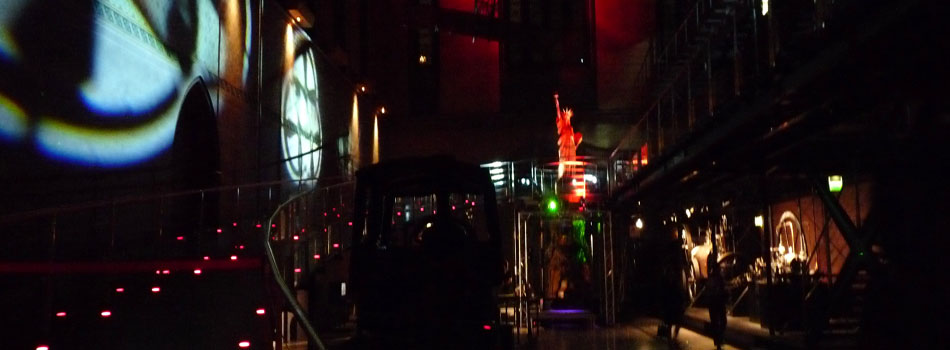

CARDIS 2014: Conference Venue
CARDIS 2014 takes place at CNAM in Paris, France

The Cnam is a very unique French institution of long-standing and deep scientific tradition. It is supervised by the French Ministry of Higher Education and Research. The Cnam has been entrusted with 3 closely interconnected missions:
- Lifelong education;
- Research and innovation;
- Dissemination of scientific and technical knowledge.
|  Night View Saint Martin des champs church © Musée des arts et métiers-Cnam, Paris |
Part of the Cnam, founded in 1794 by Henri Grégoire there is "a store of new and useful inventions,", which is a museum of technological innovation. The Musée des arts et métiers was refurbished in 2000, and now exhibits over 2,400 inventions. They are split into seven collections: Scientific instruments, Materials, Energy, Mechanics, Construction, Communication, and Transport. |
During the conference a visit of the museum will be scheduled.
The conference will be in the G. Planté room, and the building entrance is at the 2 Rue Conté.
The Cnam map and room location is here .
.
How to get to CNAM
CNAM By metro : Metro is about one minute away from CNAM. The nearest metro stations are
- Station Arts et métiers on line 11
- Station Réaumur Sébastopol on line 4
Metro maps are available here.
From Roissy - Charles de Gaulle Airport
Take the RER B towards Saint Rémy-les-Chevreuses, getting off at Châtelet les Halles,
Change
at Châtelet les Halles station, take the metro line 4 towards Porte de
Clignancourt, get off Réaumur Sébastopol, or take the line 11, and get
off Arts et Métiers.
From Orly Airport
Take the Orlyval shuttle to Antony,
Change at Antony > take the RER B towards Saint Rémy-les-Chevreuses, getting off at Châtelet les Halles,
Change
at Châtelet les Halles station > Take the metro line 4 to Réaumur
Sébastopol, or take the line 11, and get off Arts et Métiers.
From the railway stations
- St Lazare
- Take metro line 3 direction Gallieni, getting off Arts et Métiers.
- Montparnasse
- Take metro line 4 direction Porte de Clignancourt, get off Réaumur Sébastopol.
- Gare du Nord, Gare de l'Est
- Take metro line 4 direction Mairie de Montrouge, get off Réaumur Sébastopol.
- Gare de Lyon
- Take metro line 1 direction la Défense, get off Hotel de ville. Or take the Bus number 20 and stop at Porte Saint Martin (5 minutes walk).


{kind=link}